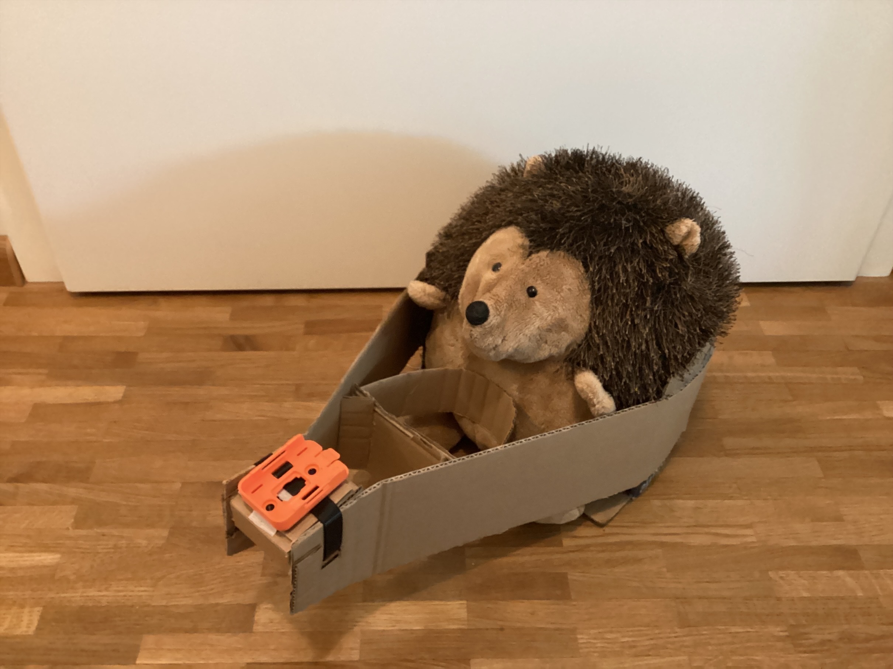

Am 7. Mai ist Kuscheltierfliegen in meinem Modellflugverein... Was denkt die Allgemeinheit, sollte ich den
Eagel da mal mitnehmen? Mit einer Actioncam vornedran gäbe das bestimmt interessante Aufnahmen :)

Eagel + Kamerahalter sind bereit, jetzt muss nur noch das Wetter mitspielen... es ist etwas stürmisch, aber
unser furchtloser Stachelball schafft das schon
Also gut, wir sind zurück...
Das Wetter wurde noch richtig traumhaft, sogar der Wind war letztendlich fast völlig verschwunden... Und der
Eagel hat tatsächlich mitsamt Halterung ein Flugzeug gefunden!
Allerdings war das ein absolutes Monster mit gigantischem Steuerflächen und einem 50plus-Volt-Antrieb...
(Zum Vergleich: meine Flieger gehen über 15V nicht hinaus)
Sagen wir es mal so, der Pilot hat den Flieger nicht geschont und eines der wildesten 3D-Programme
vorgeflogen, die ich je gesehen habe... Die Halterung hat gehalten, aber der Eagel hat im Rumpf sein eigenes
Kunstflugprogramm veranstaltet
Bis ich den Film (4k 60fps... falls jemand das Original haben will, gerne sagen, aber hier werde ich erstmal
nur eine komprimierte Version reinstellen -> Downloadzeit) und die Bilder verschickbar habe, hier ein
kleiner Teaser:
(Auf dem Bild habe ich die Halterung schon verstärkt gehabt, aber leider waren alle Akkus (10 Einzelpacks
auf eine Leitung... einfach nur krass) vom Flieger schon leer, und das war der einzige, in den die Halterung
reingepasst hat)
(Heißkleber und Pappe waren natürlich dabei)
Ach ja, an alle Coldplay-Fans: Auf den Boxen lief während des Fluges "Paradise"... Ganz passend eigentlich,
oder nicht?
Geschnittener
Rundflug:
Ganzer Flug: